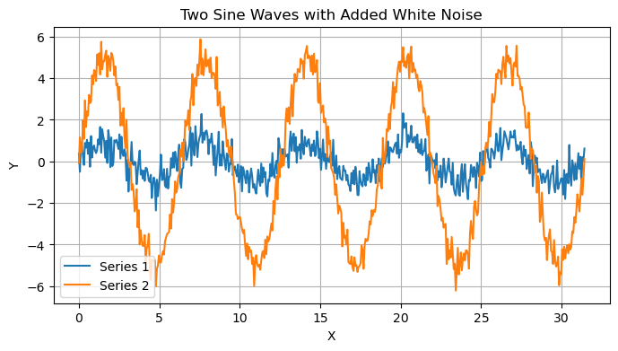
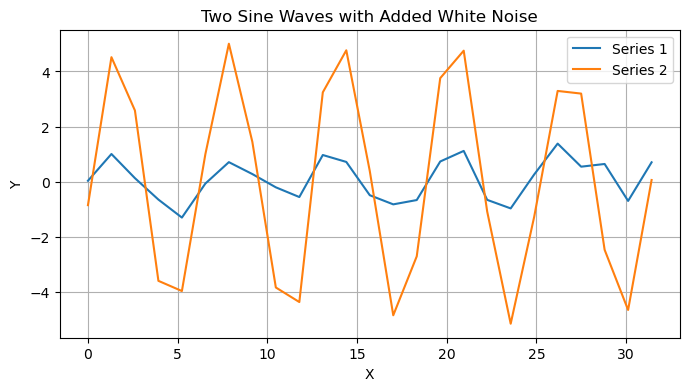
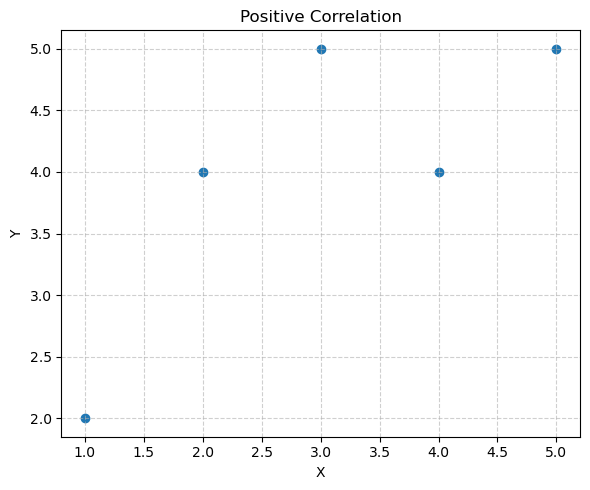
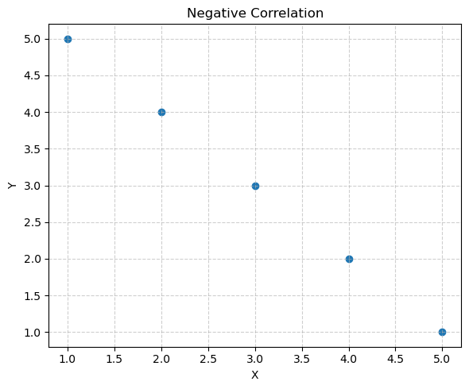
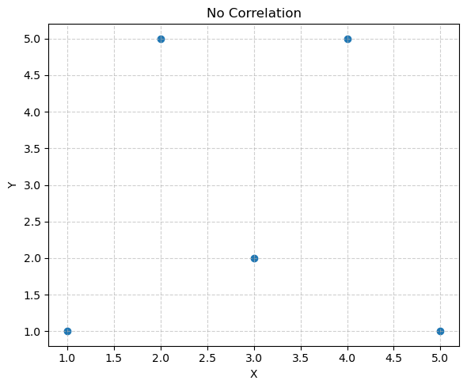
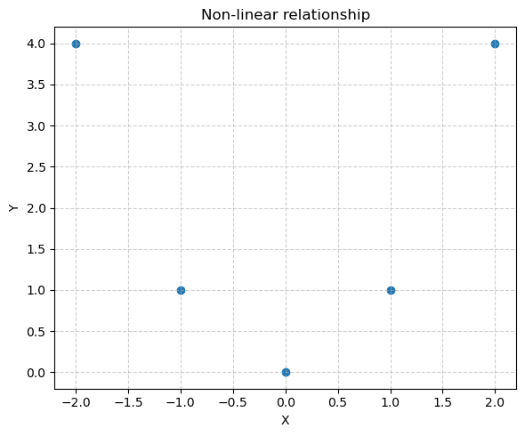
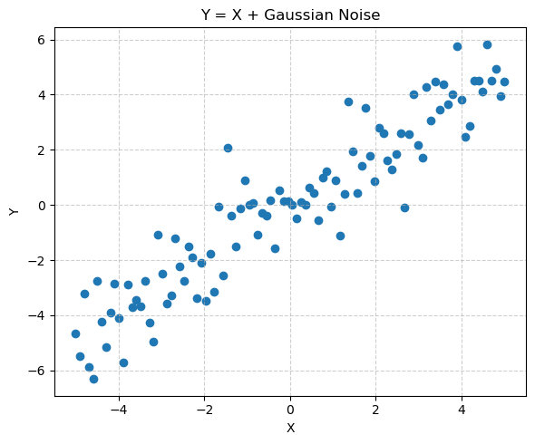
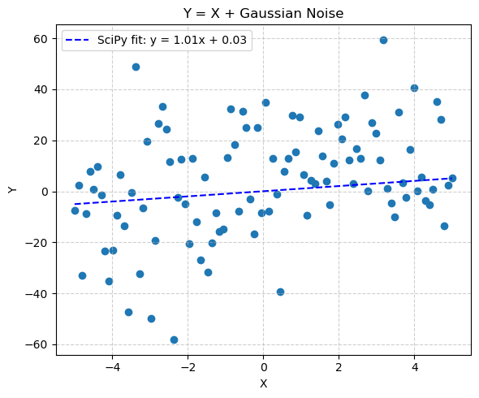

CDA3: Correlation and Covariance#
Covariance#
Covariance measures how much two random variables change together. In other words, it assesses whether larger values of one variable tend to correspond to larger or smaller values of the other variable.
The formula for covariance between two variables \(x\) and \(y\) is:
\(cov(X, Y) = \overline{(x_i - \bar{x}) (y_i - \bar{y})}\)
which for an entire and complete dataset of \(n\) points is:
\(cov(X, Y) = \frac{1}{n} \Sigma [(x_i - \bar{x}) (y_i - \bar{y})]\)
Where:
\(x_i\) and \(y_i\) are the individual data points
\(\bar{x}\) and \(\bar{y}\) are the means of \(x\) and \(y\), respectively
\(n\) is the number of data points
Interpretation:
Positive covariance: Indicates that X and Y tend to increase or decrease together.
Negative covariance: Indicates that X tends to increase when Y decreases, and vice versa.
Zero covariance: Indicates no linear relationship between X and Y.
Let’s make up a dummy pair of datasets based on a sinewave with added noise…
import numpy as np
import matplotlib.pyplot as plt
def gen_noisy_sinewaves(num_points=500, mag1=2,mag2=5,noise_magnitude=0.5):
"""
generates two sine waves with different magnitudes and added white noise.
Args:
num_points: The number of data points to generate.
noise_magnitude: The magnitude of the added white noise.
"""
# Generate x-values (time)
x = np.linspace(0, 10 * np.pi, num_points)
# Generate two sine waves with different magnitudes
y1 = mag1 * np.sin(x)
y2 = mag2 * np.sin(x)
# Add white noise to each sine wave
noise1 = np.random.normal(0, noise_magnitude, num_points)
noise2 = np.random.normal(0, noise_magnitude, num_points)
y1_noisy = y1 + noise1
y2_noisy = y2 + noise2
return x,y1_noisy,y2_noisy
def plot_noisy_sinewaves(x,y1,y2):
"""
Plots two sine waves with different magnitudes and added white noise.
Args:
x, y1 and y2
"""
# Create a single subplot (panel)
fig, ax = plt.subplots(1, 1, figsize=(8, 4))
# Plot both sine waves on the same panel
ax.plot(x, y1, label='Series 1')
ax.plot(x, y2, label='Series 2')
# Add labels, title, and legend
ax.set_title('Two Sine Waves with Added White Noise')
ax.set_xlabel('X')
ax.set_ylabel('Y')
ax.legend()
ax.grid(True)
# Show the plot
plt.show()
x,y1,y2=gen_noisy_sinewaves(mag1=1,mag2=5,noise_magnitude=0.5,num_points=500) # Default parameters
plot_noisy_sinewaves(x,y1,y2) # Default parameters

Discussion#
Is the covariance positive, negative or close to zero in your opinion ?
How will increasing or decreasing the noise magnitude change the covariance ?
What does close to zero actually mean?
Let’s code up that relationship for the covariance and find out what it was…
def calculate_covariance_pop(x, y):
"""Calculates covariance between two arrays using only np.mean."""
if len(x) != len(y):
raise ValueError("Input arrays must have the same length.")
mean_x = np.mean(x)
mean_y = np.mean(y)
covariance = np.mean((x - mean_x) * (y - mean_y))
return covariance
# Calculate covariance using the custom function
def calc_cov(y1,y2):
cov_scratch = calculate_covariance_pop(y1, y2)
print("Covariance (from definition):", cov_scratch)
# Calculate covariance using np.cov
cov_np = np.cov(y1, y2)[0, 1] # [0, 1] extracts the covariance value check the help page
print("Covariance (np.cov):", cov_np)
calc_cov(y1,y2)
Covariance (from definition): 22.590372842572155
Covariance (np.cov): 22.63564413083384
what has happened?#
These values are almost the same but not quite. Why is there a difference?
Exercise#
Rerun the generation function to make two new series, but reduce the number of points to 25 (argument num_points=25). Recalculate the two covariances. Did the difference between the two methods increase, decrease or stay the same ? what do you think might be going on?
x,y1,y2=gen_noisy_sinewaves(mag1=1,mag2=5,noise_magnitude=0.5,num_points=25)
plot_noisy_sinewaves(x,y1,y2)
calc_cov(y1,y2)

Covariance (from definition): 2.124963944118939
Covariance (np.cov): 2.213504108457229
Population versus Sample Covariance#
The definition of covariance we have is for the case where you have the entire population of data. In this case you would divide the sum by n (the total number of data points) and use the mean. This gives you the population covariance. But often this is not the case and your data is a sample.
Sample Covariance:#
If you have a sample of data (a subset of the population), you should divide the sum by n - 1. This gives you the sample covariance, which is an unbiased estimate of the population covariance. Dividing by n - 1 corrects for the fact that the sample mean is used to calculate the deviations, which reduces the degrees of freedom by 1.
When you calculate the sample mean, you lose one degree of freedom. Using n - 1 in the denominator corrects for this loss and provides a more accurate estimate of the population covariance.
Thus for a sample covariance the correct definition is
\(cov(X, Y) = \frac{1}{(n-1)} \Sigma [(x_i - \bar{x}) (y_i - \bar{y})]\)
def calculate_covariance_sample(x, y):
"""Calculates covariance between two arrays using only np.mean."""
if len(x) != len(y):
raise ValueError("Input arrays must have the same length.")
n=len(x)
mean_x = np.mean(x)
mean_y = np.mean(y)
covariance = np.sum((x - mean_x) * (y - mean_y))/(n-1)
return covariance
# Calculate covariance using the custom function for whole population
cov_pop = calculate_covariance_pop(y1, y2)
print("Covariance (from whole population):", cov_pop)
# Calculate covariance using the custom function for sampled population
cov_sam = calculate_covariance_sample(y1, y2)
print("Covariance (from samples):", cov_sam)
# Calculate covariance using np.cov
cov_np = np.cov(y1, y2)[0, 1] # [0, 1] extracts the covariance value check the help page
print("Covariance (np.cov):", cov_np)
Covariance (from whole population): 2.124963944118939
Covariance (from samples): 2.2135041084572284
Covariance (np.cov): 2.213504108457229
As we now see the answer is the same as the numpy package, at least down to rounding error.
Exercise#
Try changing the noise on the calculation how does it change the covariance?
for noise in [0,0.2,0.5,1,2,4,8]:
x,y1,y2=gen_noisy_sinewaves(mag1=7,mag2=7,noise_magnitude=noise) # Default parameters
print("Noise mag:"+str(noise)+", Covariance:", calculate_covariance_sample(y1,y2))
Noise mag:0, Covariance: 24.5
Noise mag:0.2, Covariance: 24.517178126552682
Noise mag:0.5, Covariance: 24.533367438137308
Noise mag:1, Covariance: 23.857996830938692
Noise mag:2, Covariance: 24.884982180520108
Noise mag:4, Covariance: 24.43721739262867
Noise mag:8, Covariance: 23.880762997964545
Exercise (cont)#
what do you notice about the covariance as a function of the noise?
Run it again, and again, and again? How do the values change?
What is the impact of changing the sinewave magnitude relative to the noise? If you make both sinewaves have a magnitude of 5 for example.
What does the covariance actually mean? How can we tell if y1 and y2 are more “associated” than y1 and y3 if the underlying magnitude of the oscillations of each changes? For this we need to use the correlation.
Correlation#
Correlation measures the strength and direction of the linear relationship between two variables. It is simply a normalized version of covariance, making it easier to compare relationships across different datasets.
The most common type of correlation is the Pearson correlation coefficient, calculated as:
\(r = cov(x, y) / (\sigma_x \sigma_y) \)
Where:
cov(x, y) is the covariance between \(x\) and \(y\)
\(\sigma_x\) and \(\sigma_y\) are the standard deviations of \(x\) and \(y\), respectively
Often in statistics we use the notation \(s\) for sample standard deviation to differentiate it from the population standard deviation \(\sigma\)
Interpretation of Pearson Correlation Coefficient (\(r\)):
-1 ≤ \(r\) ≤ 1
\(r\) = 1: Perfect positive linear correlation
\(r\) = -1: Perfect negative linear correlation
\(r\) = 0: No linear correlation
The closer |r| is to 1, the stronger the linear relationship.
import numpy as np
import matplotlib.pyplot as plt
def correlation(x,y):
n=len(x)
corr1 = np.sum((x-np.mean(x))*(y-np.mean(y)))/(n*np.std(x)*np.std(y))
corr2 = np.corrcoef(x,y)[0, 1]
return corr1,corr2
def analyze_and_plot(data, title):
"""
Calculates covariance and correlation, and generates a single scatter plot
using the subplots structure (even though it's one plot).
Args:
data (pd.DataFrame): DataFrame with columns 'X' and 'Y'.
title (str): Title for the plot.
Returns:
None (displays the plot)
"""
covariance = np.cov(data['X'], data['Y'])[0, 1]
correlation = np.corrcoef(data['X'], data['Y'])[0, 1]
print(f"\n--- {title} ---")
print(f"Covariance: {covariance}")
print(f"Correlation: {correlation}")
fig,ax = plt.subplots(1, 1, figsize=(6, 5)) # Create a figure and a single axes object
ax.scatter(data['X'], data['Y'])
ax.set_xlabel('X') # Use ax.set_xlabel
ax.set_ylabel('Y') # Use ax.set_ylabel
ax.set_title(title) # Use ax.set_title
ax.grid(True, linestyle='--', alpha=0.6)
fig.tight_layout() # Use fig.tight_layout (or plt.tight_layout)
return fig,ax
import pandas as pd
# Example 1: Positive Correlation
data1 = pd.DataFrame({'X': [1, 2, 3, 4, 5], 'Y': [2, 4, 5, 4, 5]})
corr1,_=correlation(data1['X'],data1['Y'])
print(" definition corr ",corr)
analyze_and_plot(data1, 'Positive Correlation')
test 0.7745966692414833 0.7745966692414834
definition corr (np.float64(0.9682458365518541), np.float64(0.9377429017457031))
--- Positive Correlation ---
Covariance: 1.5
Correlation: 0.7745966692414834
(<Figure size 600x500 with 1 Axes>,
<Axes: title={'center': 'Positive Correlation'}, xlabel='X', ylabel='Y'>)

# Example 2: Negative Correlation
data2 = pd.DataFrame({'X': [1, 2, 3, 4, 5], 'Y': [5, 4, 3, 2, 1]})
analyze_and_plot(data2, 'Negative Correlation')
--- Negative Correlation ---
Covariance: -2.5
Correlation: -0.9999999999999999
(<Figure size 600x500 with 1 Axes>,
<Axes: title={'center': 'Negative Correlation'}, xlabel='X', ylabel='Y'>)

# Example 3: No Correlation
data3 = pd.DataFrame({'X': [1, 2, 3, 4, 5], 'Y': [1, 5, 2, 5, 1]})
analyze_and_plot(data3, 'No Correlation')
--- No Correlation ---
Covariance: 0.0
Correlation: 0.0
(<Figure size 600x500 with 1 Axes>,
<Axes: title={'center': 'No Correlation'}, xlabel='X', ylabel='Y'>)

# Example 4: Non-linear relationship
data4 = pd.DataFrame({'X': [-2, -1, 0, 1, 2], 'Y': [4, 1, 0, 1, 4]})
analyze_and_plot(data4, 'Non-linear relationship')
--- Non-linear relationship ---
Covariance: 0.0
Correlation: 0.0
(<Figure size 600x500 with 1 Axes>,
<Axes: title={'center': 'Non-linear relationship'}, xlabel='X', ylabel='Y'>)

# --- Example Usage (y = x + Gaussian Noise) ---
#np.random.seed(0) # for reproducibility
npts=100
x = np.linspace(-5, 5, npts)
noise = np.random.normal(0, 1, npts) # Mean 0, standard deviation 2
y = x + noise
data = pd.DataFrame({'X': x, 'Y': y})
analyze_and_plot(data, 'Y = X + Gaussian Noise')
--- Y = X + Gaussian Noise ---
Covariance: 8.34842476935364
Correlation: 0.9377429017457031
(<Figure size 600x500 with 1 Axes>,
<Axes: title={'center': 'Y = X + Gaussian Noise'}, xlabel='X', ylabel='Y'>)

exercise#
after the next lesson, you can add the regression line to the plot and see how close it is to the 1-1 line
from scipy.stats import linregress
slope_scipy, intercept_scipy, r_value, p_value, std_err = linregress(x, y)
y_pred_scipy = slope_scipy * x + intercept_scipy
x = np.linspace(-5, 5, npts)
noise = np.random.normal(0, 20, npts) # Mean 0, standard deviation 2
y = x + noise
data = pd.DataFrame({'X': x, 'Y': y})
fig,ax=analyze_and_plot(data, 'Y = X + Gaussian Noise')
ax.plot(x, y_pred_scipy, color='blue', linestyle='--', label=f'SciPy fit: y = {slope_scipy:.2f}x + {intercept_scipy:.2f}')
ax.legend()
--- Y = X + Gaussian Noise ---
Covariance: 22.65111395662128
Correlation: 0.3588206481021034
<matplotlib.legend.Legend at 0x16b7c7190>

\(r^2\) as the Proportion of Explained Variability#
the square of the correlation coefficient is related to the amount of observed variability that the linear fit explains
Partitioning the Sum of Squares#
We start with the total deviation of an observed value \(y_i\) from its mean \(\bar{y}\). This can be algebraically split by adding and subtracting the predicted value \(\hat{y}_i\):
Where:
\((\hat{y}_i - \bar{y})\) is the Explained deviation (distance from mean to the line).
\((y_i - \hat{y}_i)\) is the Unexplained deviation (the residual \(\epsilon_i\)).
Squaring both sides and summing over all \(n\) points: $\(\sum (y_i - \bar{y})^2 = \sum [(\hat{y}_i - \bar{y}) + (y_i - \hat{y}_i)]^2\)$
Expanding the binomial \((a + b)^2 = a^2 + b^2 + 2ab\): $\(\sum (y_i - \bar{y})^2 = \sum (\hat{y}_i - \bar{y})^2 + \sum (y_i - \hat{y}_i)^2 + 2 \sum (\hat{y}_i - \bar{y})(y_i - \hat{y}_i)\)$
In Ordinary Least Squares (OLS) regression, the cross-product term \(2 \sum (\hat{y}_i - \bar{y})(y_i - \hat{y}_i)\) is mathematically guaranteed to be zero because the residuals are uncorrelated with the predicted values.
This gives us the Fundamental Partitioning Identity for the sum of the squares (SS): $\(SS_{tot} = SS_{reg} + SS_{res}\)$
By definition, the proportion of variability explained by the model is the ratio :$\(\text{Proportion Explained} = \frac{SS_{reg}}{SS_{tot}}\)$.
From the properties of the regression line, we know \(\hat{y}_i - \bar{y} = \hat{m}(x_i - \bar{x})\).
Substituting this into the formula for \(SS_{reg}\):$\(SS_{reg} = \sum (\hat{y}_i - \bar{y})^2 = \sum [\hat{m}(x_i - \bar{x})]^2\)$$\(SS_{reg} = \hat{m}^2 \sum (x_i - \bar{x})^2\)$
Since \(\sum (x_i - \bar{x})^2\) is just \((n-1)s_x^2\)
Substituting the Correlation (\(r\)).
We know from our previous derivation that the slope \(\hat{m}\) is related to correlation \(r\) by:
Now, plug this into our \(SS_{reg}\) equation:
The \(s_x^2\) terms cancel out perfectly: $\(SS_{reg} = r^2 (n-1)s_y^2\)$
Recall that the total sum of squares is \(SS_{tot} = (n-1)s_y^2\). Substituting this into the equation above: $\(SS_{reg} = r^2 \cdot SS_{tot}\)$
Divide both sides by \(SS_{tot}\)
meaning that the proportion of unexplained variability is given by $\( 1 - r^2 \)$
Statistical Significance of Correlation#
While the correlation coefficient (r) measures the strength and direction of a linear relationship, it doesn’t tell us if that relationship is statistically significant. Statistical significance indicates whether the observed correlation is likely a true relationship in the population or simply due to random chance in our sample.
Hypothesis Testing
To determine statistical significance, we perform hypothesis testing:
Null Hypothesis (H0): There is no correlation between the variables in the population (\(r = 0\)).
Alternative Hypothesis (H1): There is a correlation between the variables in the population (\(r \ne 0\)).
Derivation of the T-Test for Pearson Correlation#
We assume that bivariate normality, the test statistic follows a Student’s t-distribution with \(df = n - 2\).
What is Bivariate Normality?
This means \(X\) and \(Y\) are not just normal individually, but their joint distribution is a 3D bell shape. Precisely, it implies Linearity, Homoscedasticity: (The variance of \(y\) is constant across all values of \(x\)).
The derivation of the t-distribution for \(r\) relies on the independence of the sample correlation and the sample variance. This independence only holds true if the underlying population is bivariate normal. If your data is NOT bivariate normal the calculated p-value might be “falsely significant” (Type I error) and the \(n-2\) degrees of freedom might not accurately represent the reliability of the estimate.
Theoretical Foundation: Correlation vs. Regression#
The derivation is based on the link between correlation and Simple Linear Regression. Consider the model:
Where:
\(m\) = Slope (The rate of change in \(y\) per unit of \(x\))
\(c\) = Intercept
\(\epsilon\) = Random error (residuals)
The estimated slope (\(\hat{m}\)) (which we recall is this:)
\begin{equation} \hat{m} = \frac{\sum (x_i - \bar{x})(y_i - \bar{y})}{\sum (x_i - \bar{x})^2} \tag{1} \end{equation} is mathematically related to the correlation \(r\)
via the sample Standard Deviations (\(s_x, s_y\)):** $\(s_x = \sqrt{\frac{\sum (x_i - \bar{x})^2}{n-1}} \quad \implies \quad s_x^2 = \frac{\sum (x_i - \bar{x})^2}{n-1}\)\( (and the same for \)s_y$)
From the definition of \(r\), isolate the “sum of products”: $\(\sum (x_i - \bar{x})(y_i - \bar{y}) = r \cdot (n-1) \cdot s_x \cdot s_y\)$
From the definition of \(s_x^2\), isolate the “sum of squares”: $\(\sum (x_i - \bar{x})^2 = (n-1) \cdot s_x^2\)$
Substitute the expressions back: $\(\hat{m} = \frac{r \cdot (n-1) \cdot s_x \cdot s_y}{(n-1) \cdot s_x^2}\)$
The \((n-1)\) terms cancel, and one \(s_x\) in the numerator cancels with one \(s_x\) in the denominator:
thus
Because \(\frac{s_y}{s_x}\) is a ratio of standard deviations (always positive), testing if the correlation \(r\) is zero is identical to testing if the slope \(m\) is zero.
The T-Statistic for the Slope#
To test if a slope is significant, we use the ratio of the estimate to its standard error: $\(t = \frac{\hat{m}}{SE(\hat{m})}\)$
Defining the Standard Error#
We recall that the standard error of the slope \(SE(\hat{m})\) is given by the root eqn 4 in last lecture:
Where \(s_{y \cdot x}\) is the Standard Error of the Estimate (the standard deviation of the residuals).
Expressing Residuals in terms of \(r\)#
The variation in \(y\) that the model fails to explain is given by the Standard Error of Estimate, \(s_{y \cdot x}\) $\(s_{y \cdot x} \equiv s_{y_i - \hat{y}_i} = \sqrt{\frac{\sum (y_i - \hat{y}_i)^2}{n-2}} = \sqrt{\frac{SS_{res}}{(n-2)}}\)$
which recalling the definitions of \(SS_{res}\)
gives
Substitution and Algebra#
Substitute the definitions of \(\hat{m}\) and \(SE(\hat{m})\) into the \(t\) formula:
Cancel the Ratios: The \(\frac{s_y}{s_x}\) terms in the numerator and denominator cancel out.
Simplify the Roots: The \(\sqrt{n-1}\) terms also cancel: $\(t = \frac{r}{\frac{\sqrt{1-r^2}}{\sqrt{n-2}}}\)$
Final Formula#
Rearranging the denominator gives the standard formula for the correlation t statistic:
Interpretation of Components#
Term |
Role |
|---|---|
\(r\) |
The effect strength of relationship. |
\(n - 2\) |
Degrees of Freedom (we lose 2 because we estimated \(m\) and \(c\)). |
\(r^2\) |
The proportion of explained variance by our regression. |
\(1 - r^2\) |
The unexplained variance (noise). |
Sensitivity to Out;liers Pearson’s \(r\) and this \(t\)-test are highly sensitive to outliers. A single extreme point can artificially inflate \(r\), leading to a significant \(t\)-stat even when no general trend exists. Always visualize your scatter plot!
P-value
The calculated t-statistic is compared to the t-distribution with n - 2 degrees of freedom to obtain a p-value. The p-value represents the probability of observing a correlation as strong as (or stronger than) the one we found in our sample, assuming that there is no correlation in the population (i.e., assuming the null hypothesis is true).
Significance Level (α)
We set a significance level (\(\alpha\)), typically 0.05. If the p-value is less than \(\alpha\), we reject the null hypothesis and conclude that the correlation is statistically significant.
Sample Size and Significance
Remember, we have that \(\sqrt(n-2)\) term. What does that mean in essence. Well the required magnitude of the correlation coefficient (r) to achieve statistical significance decreases as the sample size (n) increases.
Small Sample Sizes: With small sample sizes, even a moderately strong correlation might not be statistically significant. Random fluctuations have a larger influence, making it harder to distinguish a true relationship from chance. Therefore, you need a larger r to be confident it’s not a fluke.
Large Sample Sizes: With large sample sizes, even a weak correlation can be statistically significant. Large samples provide more statistical power, reducing the impact of random variations. A smaller r can be deemed statistically significant because you have more data to support that the small effect is real.
Important Implications
Practical vs. Statistical Significance: A statistically significant correlation doesn’t necessarily imply practical importance. A very large sample might yield a significant result for a tiny, practically meaningless correlation. Always consider the context and the magnitude of the effect.
Report the correlation coefficient (r) along with confidence intervals to provide a complete picture of the relationship.
Let’s dig a little deeper into this…
npts=50
series1 = np.random.rand(npts)
series2 = np.random.rand(npts)
print (series1)
print (series2)
[0.61601204 0.50838776 0.63283991 0.30608856 0.23747594 0.56631428
0.7093819 0.72823361 0.03605593 0.84960152 0.18175636 0.54901095
0.50484708 0.75693001 0.82545028 0.94365873 0.3496713 0.69570182
0.04960591 0.23695914 0.96326297 0.37521593 0.15897277 0.26796831
0.77672656 0.60474298 0.68674738 0.97136305 0.62446506 0.47252579
0.3218168 0.63005773 0.83528234 0.69323586 0.65271753 0.59994616
0.46019436 0.31427865 0.21835903 0.9522931 0.31859153 0.19942937
0.15150586 0.61645646 0.35374373 0.07321667 0.8121896 0.59415519
0.5630184 0.17609533]
[0.8789675 0.40027085 0.57065393 0.02195734 0.54641183 0.86672926
0.69531825 0.10992728 0.60027952 0.14294193 0.16705715 0.90595796
0.46461052 0.84098958 0.15533452 0.92227116 0.08780419 0.57571583
0.5817899 0.64154546 0.7857051 0.07622696 0.31446153 0.2623726
0.60380693 0.66316291 0.7136461 0.31179223 0.71159894 0.56576452
0.58234351 0.02281104 0.21286704 0.9055492 0.04597556 0.22883344
0.24543233 0.36712449 0.04346455 0.20626289 0.53528424 0.10714364
0.49003203 0.52746808 0.88560296 0.9321747 0.03710962 0.52408503
0.25276457 0.19878072]
from scipy import stats
def test_correlation_significance(npts=10):
"""
Generates two random number series, calculates correlation,
and performs a significance test. Returns True if significant, False otherwise.
"""
# Generate two random number series
series1 = np.random.rand(npts)
series2 = np.random.rand(npts)
# Calculate the Pearson correlation coefficient using np.corrcoef
correlation = np.corrcoef(series1, series2)[0, 1]
# Calculate the t-statistic
n = len(series1)
t_statistic = correlation * np.sqrt((n - 2) / (1 - correlation**2))
# Calculate the p-value (two-tailed test)
degrees_of_freedom = n - 2
p_value = stats.t.sf(np.abs(t_statistic), df=degrees_of_freedom) * 2
# Determine significance at the 95% level (alpha = 0.05)
alpha = 0.05
# Print the results
print(f"Correlation coefficient: {correlation:.3f}", f"T-statistic: {t_statistic:.3f}")
return p_value < alpha
we run a single trial first
test_correlation_significance()
Correlation coefficient: 0.694 T-statistic: 2.727
np.True_
that’s a bit boring to keep clicking, so let’s run it many times in a loop
# Run the test 20 times and count significant results
num_trials = 100
significant_count = 0
for _ in range(num_trials):
if test_correlation_significance():
significant_count += 1
# Calculate the proportion of significant results
proportion_significant = significant_count / num_trials
# Print the result
print(f"Out of {num_trials} trials, the correlation was statistically significant in {significant_count} cases.")
print(f"Proportion of significant results: {proportion_significant:.2f}")
Correlation coefficient: -0.400 T-statistic: -1.234
Correlation coefficient: 0.215 T-statistic: 0.621
Correlation coefficient: -0.210 T-statistic: -0.609
Correlation coefficient: -0.419 T-statistic: -1.304
Correlation coefficient: -0.039 T-statistic: -0.111
Correlation coefficient: -0.026 T-statistic: -0.073
Correlation coefficient: -0.464 T-statistic: -1.481
Correlation coefficient: -0.017 T-statistic: -0.049
Correlation coefficient: 0.276 T-statistic: 0.811
Correlation coefficient: -0.371 T-statistic: -1.128
Correlation coefficient: 0.046 T-statistic: 0.130
Correlation coefficient: -0.482 T-statistic: -1.558
Correlation coefficient: -0.456 T-statistic: -1.450
Correlation coefficient: 0.292 T-statistic: 0.863
Correlation coefficient: 0.045 T-statistic: 0.128
Correlation coefficient: 0.812 T-statistic: 3.931
Correlation coefficient: -0.251 T-statistic: -0.732
Correlation coefficient: 0.015 T-statistic: 0.042
Correlation coefficient: -0.142 T-statistic: -0.406
Correlation coefficient: 0.244 T-statistic: 0.711
Correlation coefficient: 0.064 T-statistic: 0.181
Correlation coefficient: 0.064 T-statistic: 0.182
Correlation coefficient: -0.148 T-statistic: -0.422
Correlation coefficient: -0.136 T-statistic: -0.389
Correlation coefficient: -0.248 T-statistic: -0.724
Correlation coefficient: 0.096 T-statistic: 0.273
Correlation coefficient: 0.563 T-statistic: 1.927
Correlation coefficient: -0.443 T-statistic: -1.396
Correlation coefficient: -0.377 T-statistic: -1.153
Correlation coefficient: 0.188 T-statistic: 0.542
Correlation coefficient: 0.462 T-statistic: 1.475
Correlation coefficient: 0.682 T-statistic: 2.638
Correlation coefficient: -0.063 T-statistic: -0.178
Correlation coefficient: -0.398 T-statistic: -1.227
Correlation coefficient: -0.077 T-statistic: -0.220
Correlation coefficient: 0.313 T-statistic: 0.933
Correlation coefficient: -0.203 T-statistic: -0.585
Correlation coefficient: -0.638 T-statistic: -2.345
Correlation coefficient: -0.009 T-statistic: -0.025
Correlation coefficient: 0.124 T-statistic: 0.355
Correlation coefficient: 0.041 T-statistic: 0.117
Correlation coefficient: -0.164 T-statistic: -0.471
Correlation coefficient: -0.384 T-statistic: -1.178
Correlation coefficient: 0.151 T-statistic: 0.431
Correlation coefficient: 0.044 T-statistic: 0.125
Correlation coefficient: 0.508 T-statistic: 1.668
Correlation coefficient: -0.315 T-statistic: -0.938
Correlation coefficient: 0.290 T-statistic: 0.857
Correlation coefficient: 0.264 T-statistic: 0.773
Correlation coefficient: -0.081 T-statistic: -0.231
Correlation coefficient: -0.216 T-statistic: -0.627
Correlation coefficient: -0.205 T-statistic: -0.593
Correlation coefficient: -0.727 T-statistic: -2.996
Correlation coefficient: -0.243 T-statistic: -0.709
Correlation coefficient: 0.224 T-statistic: 0.649
Correlation coefficient: -0.343 T-statistic: -1.033
Correlation coefficient: -0.433 T-statistic: -1.359
Correlation coefficient: -0.233 T-statistic: -0.678
Correlation coefficient: 0.115 T-statistic: 0.329
Correlation coefficient: 0.201 T-statistic: 0.580
Correlation coefficient: -0.550 T-statistic: -1.864
Correlation coefficient: -0.113 T-statistic: -0.322
Correlation coefficient: -0.553 T-statistic: -1.877
Correlation coefficient: -0.324 T-statistic: -0.969
Correlation coefficient: 0.063 T-statistic: 0.179
Correlation coefficient: 0.478 T-statistic: 1.539
Correlation coefficient: 0.270 T-statistic: 0.794
Correlation coefficient: -0.037 T-statistic: -0.105
Correlation coefficient: -0.375 T-statistic: -1.144
Correlation coefficient: -0.500 T-statistic: -1.634
Correlation coefficient: -0.340 T-statistic: -1.023
Correlation coefficient: 0.126 T-statistic: 0.360
Correlation coefficient: 0.108 T-statistic: 0.307
Correlation coefficient: -0.024 T-statistic: -0.068
Correlation coefficient: 0.006 T-statistic: 0.016
Correlation coefficient: -0.180 T-statistic: -0.517
Correlation coefficient: 0.175 T-statistic: 0.503
Correlation coefficient: -0.002 T-statistic: -0.004
Correlation coefficient: 0.008 T-statistic: 0.022
Correlation coefficient: 0.726 T-statistic: 2.990
Correlation coefficient: -0.364 T-statistic: -1.106
Correlation coefficient: -0.270 T-statistic: -0.794
Correlation coefficient: 0.057 T-statistic: 0.161
Correlation coefficient: -0.809 T-statistic: -3.900
Correlation coefficient: -0.399 T-statistic: -1.231
Correlation coefficient: 0.420 T-statistic: 1.310
Correlation coefficient: 0.024 T-statistic: 0.069
Correlation coefficient: 0.456 T-statistic: 1.447
Correlation coefficient: -0.630 T-statistic: -2.293
Correlation coefficient: -0.332 T-statistic: -0.995
Correlation coefficient: 0.283 T-statistic: 0.833
Correlation coefficient: -0.504 T-statistic: -1.649
Correlation coefficient: 0.207 T-statistic: 0.598
Correlation coefficient: 0.417 T-statistic: 1.297
Correlation coefficient: -0.220 T-statistic: -0.637
Correlation coefficient: 0.497 T-statistic: 1.619
Correlation coefficient: -0.511 T-statistic: -1.683
Correlation coefficient: -0.231 T-statistic: -0.673
Correlation coefficient: -0.348 T-statistic: -1.048
Correlation coefficient: -0.244 T-statistic: -0.713
Out of 100 trials, the correlation was statistically significant in 6 cases.
Proportion of significant results: 0.06
Notice how many times the correlation comes up as significant?
You can get a significant result by accident.
Important note on degrees of freedom#
The degrees of freedom is set to n-2 assuming that the observations are INDEPENDENT… One of the most common errors in significance testing is people applying the test to a timeseries with a significant temporal autocorrelation and assuming the degrees of freedom to be n-2. This can overestimate, sometimes drastically, the degrees of freedom, and thus sets the “bar” for significance much lower than it actually should be.
We can demonstrate this by using a pair of timeseries which are correlated with an amount of noise added to them. If we take a running mean, we still have the same number of points almost but the degrees of freedom are much less.
correlation and causality#
Beware of attributing causality to relationships found. This can be the case but be careful to think about the processes involved. The reason we are stating this is because the next use example will allow us to assess the impact of ENSO on global weather.
Homework:#
Get together in groups and look at the definitions of correlation and covariance. If I were to ask you to calculate how much ENSO impacts temperature or rainfall globally, how could you do this with either of these functions?
Write a script in CDO to calculate the impact (covariance) of ENSO on rainfall in the month of July and the month of January (units mm/time). Use today’s lesson to think how you will do this.